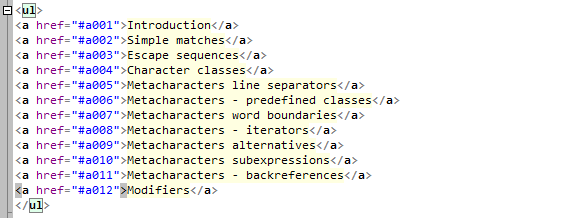

Мульти-каретки
Введение
"Мульти-каретки" - это режим одновременной работы с несколькими каретками
(мерцающими курсорами в тексте). Для перехода в этот режим есть следующие способы:
- Кликнуть в любом месте текста, удерживая Ctrl.
- Сделать обычный клик в любом месте для обозначения "начала",
затем кликнуть с удержанием Ctrl и Shift для обозначения "конца":
каретки будут расставлены вдоль колонки от "начала" до строки,
указанной "концом".
- Выделить несколько строк текста (через обычное или вертикальное
выделение) и использовать команду "Правка -- Каретки -- Каретки из
выделения...".
- Расставить пометки поиска и использовать команду "Правка -- Каретки -- Каретки из пометок поиска..."

Каретки вдоль колонки (Ctrl+Shift+клик)
Вот видео, как можно применять каретки при редактировании HTML:

Каретки в действии
Большинство основных команд редактора учитывают режим многих кареток:
- Перемещение кареток: Влево/ Вправо/ Вверх/ Вниз/ Home/ End/ Ctrl+Влево (на слово левее)/ Ctrl+Вправо (на слово правее).
- Набор текста и его удаление.
- Работа с буфером обмена: множесвенная Вставка текста из буфера, Копирование/ Вырезание всех строк, в которых находятся каретки.
- Прочие команды: удалить слово слева/справа, удалить строку, удалить
начало/конец строки, увеличить/уменьшить отступ в строке.
Советы
- Чтобы выйти из режима кареток, кликните в любом месте без Ctrl.
- Чтобы удалить одну из кареток, кликните по ней с Ctrl.
- Строки с каретками помечаются цветом в желобке (вертикальная полоса слева от текста).
- При перемещениях несколько кареток могут сливаться в одну.
- Если все каретки слились в одну, режим кареток отключается автоматически.
- Следующие команды отключают режим кареток: Ctrl+A, Shift+Alt+стрелки.
- Команды Вверх/ Вниз перемещают все каретки одновременно и могут дополнительно
скроллировать экран, чтобы сохранять видимость кареток. Команды
PageUp/ PageDown/ Ctrl+Home/ Ctrl+End выполняют только скроллирование без изменения положения кареток.
- Использование режима кареток можно запретить в диалоге настроек.
Настрока, чтобы Esc выключал режим кареток
Откройте диалог Настройки.
Установите для опции "Клавиша Esс" значение "Нет действия".
Затем на вкладке "Клавиши" назначьте Esc для одной из следующих команд:
- Каретки -- Удалить каретки, оставить первую
- Каретки -- Удалить каретки, оставить последнюю